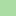

<!doctype html>
<html lang="en">
    <head>
        <meta charset="utf-8">
        <meta http-equiv="X-UA-Compatible" content="IE=edge">
        <meta name="viewport" content="initial-scale=1,user-scalable=no,maximum-scale=1,width=device-width">
        <meta name="mobile-web-app-capable" content="yes">
        <meta name="apple-mobile-web-app-capable" content="yes">
        <link rel="stylesheet" href="css/leaflet.css">
        <link rel="stylesheet" href="css/L.Control.Layers.Tree.css">
        <link rel="stylesheet" href="css/qgis2web.css">
        <link rel="stylesheet" href="css/fontawesome-all.min.css">
        <style>
        #map {
            width: 1225px;
            height: 817px;
        }
        </style>
        <title>KELAS NDVI KOTA BOGOR TAHUN 2023</title>
    </head>
    <body>
        <div id="map">
        </div>
        <script src="js/qgis2web_expressions.js"></script>
        <script src="js/leaflet.js"></script>
        <script src="js/L.Control.Layers.Tree.min.js"></script>
        <script src="js/leaflet.rotatedMarker.js"></script>
        <script src="js/leaflet.pattern.js"></script>
        <script src="js/leaflet-hash.js"></script>
        <script src="js/Autolinker.min.js"></script>
        <script src="js/rbush.min.js"></script>
        <script src="js/labelgun.min.js"></script>
        <script src="js/labels.js"></script>
        <script src="data/KELASNDVIKOTABOGOR_1.js"></script>
        <script src="data/KotaBogor_2.js"></script>
        <script>
        var highlightLayer;
        function highlightFeature(e) {
            highlightLayer = e.target;
            highlightLayer.openPopup();
        }
        var map = L.map('map', {
            zoomControl:false, maxZoom:28, minZoom:1
        }).fitBounds([[-6.693413776723544,106.6573583578173],[-6.503371739724631,106.94253800352242]]);
        var hash = new L.Hash(map);
        map.attributionControl.setPrefix('<a href="https://github.com/tomchadwin/qgis2web" target="_blank">qgis2web</a> &middot; <a href="https://leafletjs.com" title="A JS library for interactive maps">Leaflet</a> &middot; <a href="https://qgis.org">QGIS</a>');
        var autolinker = new Autolinker({truncate: {length: 30, location: 'smart'}});
        // remove popup's row if "visible-with-data"
        function removeEmptyRowsFromPopupContent(content, feature) {
         var tempDiv = document.createElement('div');
         tempDiv.innerHTML = content;
         var rows = tempDiv.querySelectorAll('tr');
         for (var i = 0; i < rows.length; i++) {
             var td = rows[i].querySelector('td.visible-with-data');
             var key = td ? td.id : '';
             if (td && td.classList.contains('visible-with-data') && feature.properties[key] == null) {
                 rows[i].parentNode.removeChild(rows[i]);
             }
         }
         return tempDiv.innerHTML;
        }
        // add class to format popup if it contains media
		function addClassToPopupIfMedia(content, popup) {
			var tempDiv = document.createElement('div');
			tempDiv.innerHTML = content;
			if (tempDiv.querySelector('td img')) {
				popup._contentNode.classList.add('media');
					// Delay to force the redraw
					setTimeout(function() {
						popup.update();
					}, 10);
			} else {
				popup._contentNode.classList.remove('media');
			}
		}
        var title = new L.Control({'position':'topright'});
        title.onAdd = function (map) {
            this._div = L.DomUtil.create('div', 'info');
            this.update();
            return this._div;
        };
        title.update = function () {
            this._div.innerHTML = '<h2>KELAS NDVI KOTA BOGOR TAHUN 2023</h2>';
        };
        title.addTo(map);
        var zoomControl = L.control.zoom({
            position: 'topleft'
        }).addTo(map);
        var bounds_group = new L.featureGroup([]);
        function setBounds() {
        }
        map.createPane('pane_GoogleSatellite_0');
        map.getPane('pane_GoogleSatellite_0').style.zIndex = 400;
        var layer_GoogleSatellite_0 = L.tileLayer('https://mt1.google.com/vt/lyrs=s&x={x}&y={y}&z={z}', {
            pane: 'pane_GoogleSatellite_0',
            opacity: 1.0,
            attribution: '<a href="https://www.google.at/permissions/geoguidelines/attr-guide.html">Map data ©2015 Google</a>',
            minZoom: 1,
            maxZoom: 28,
            minNativeZoom: 0,
            maxNativeZoom: 20
        });
        layer_GoogleSatellite_0;
        map.addLayer(layer_GoogleSatellite_0);
        function pop_KELASNDVIKOTABOGOR_1(feature, layer) {
            layer.on({
                mouseout: function(e) {
                    if (typeof layer.closePopup == 'function') {
                        layer.closePopup();
                    } else {
                        layer.eachLayer(function(feature){
                            feature.closePopup()
                        });
                    }
                },
                mouseover: highlightFeature,
            });
            var popupContent = '<table>\
                    <tr>\
                        <th scope="row">NDVI</th>\
                        <td>' + (feature.properties['NDVI'] !== null ? autolinker.link(feature.properties['NDVI'].toLocaleString()) : '') + '</td>\
                    </tr>\
                    <tr>\
                        <th scope="row">KETERANGAN</th>\
                        <td>' + (feature.properties['KETERANGAN'] !== null ? autolinker.link(feature.properties['KETERANGAN'].toLocaleString()) : '') + '</td>\
                    </tr>\
                </table>';
            var content = removeEmptyRowsFromPopupContent(popupContent, feature);
			layer.on('popupopen', function(e) {
				addClassToPopupIfMedia(content, e.popup);
			});
			layer.bindPopup(content, { maxHeight: 400 });
        }

        function style_KELASNDVIKOTABOGOR_1_0(feature) {
            switch(String(feature.properties['NDVI'])) {
                case '1':
                    return {
                pane: 'pane_KELASNDVIKOTABOGOR_1',
                stroke: false, 
                fill: true,
                fillOpacity: 1,
                fillColor: 'rgba(215,25,28,1.0)',
                interactive: true,
            }
                    break;
                case '2':
                    return {
                pane: 'pane_KELASNDVIKOTABOGOR_1',
                stroke: false, 
                fill: true,
                fillOpacity: 1,
                fillColor: 'rgba(255,127,0,1.0)',
                interactive: true,
            }
                    break;
                case '3':
                    return {
                pane: 'pane_KELASNDVIKOTABOGOR_1',
                stroke: false, 
                fill: true,
                fillOpacity: 1,
                fillColor: 'rgba(255,223,83,1.0)',
                interactive: true,
            }
                    break;
                case '4':
                    return {
                pane: 'pane_KELASNDVIKOTABOGOR_1',
                stroke: false, 
                fill: true,
                fillOpacity: 1,
                fillColor: 'rgba(171,221,164,1.0)',
                interactive: true,
            }
                    break;
                case '5':
                    return {
                pane: 'pane_KELASNDVIKOTABOGOR_1',
                stroke: false, 
                fill: true,
                fillOpacity: 1,
                fillColor: 'rgba(43,131,70,1.0)',
                interactive: true,
            }
                    break;
            }
        }
        map.createPane('pane_KELASNDVIKOTABOGOR_1');
        map.getPane('pane_KELASNDVIKOTABOGOR_1').style.zIndex = 401;
        map.getPane('pane_KELASNDVIKOTABOGOR_1').style['mix-blend-mode'] = 'normal';
        var layer_KELASNDVIKOTABOGOR_1 = new L.geoJson(json_KELASNDVIKOTABOGOR_1, {
            attribution: '',
            interactive: true,
            dataVar: 'json_KELASNDVIKOTABOGOR_1',
            layerName: 'layer_KELASNDVIKOTABOGOR_1',
            pane: 'pane_KELASNDVIKOTABOGOR_1',
            onEachFeature: pop_KELASNDVIKOTABOGOR_1,
            style: style_KELASNDVIKOTABOGOR_1_0,
        });
        bounds_group.addLayer(layer_KELASNDVIKOTABOGOR_1);
        map.addLayer(layer_KELASNDVIKOTABOGOR_1);
        function pop_KotaBogor_2(feature, layer) {
            layer.on({
                mouseout: function(e) {
                    if (typeof layer.closePopup == 'function') {
                        layer.closePopup();
                    } else {
                        layer.eachLayer(function(feature){
                            feature.closePopup()
                        });
                    }
                },
                mouseover: highlightFeature,
            });
            var popupContent = '<table>\
                    <tr>\
                        <th scope="row">NAMA KELUR</th>\
                        <td>' + (feature.properties['NAMA KELUR'] !== null ? autolinker.link(feature.properties['NAMA KELUR'].toLocaleString()) : '') + '</td>\
                    </tr>\
                    <tr>\
                        <th scope="row">LUASWH</th>\
                        <td>' + (feature.properties['LUASWH'] !== null ? autolinker.link(feature.properties['LUASWH'].toLocaleString()) : '') + '</td>\
                    </tr>\
                    <tr>\
                        <th scope="row">KECAMATAN</th>\
                        <td>' + (feature.properties['KECAMATAN'] !== null ? autolinker.link(feature.properties['KECAMATAN'].toLocaleString()) : '') + '</td>\
                    </tr>\
                    <tr>\
                        <th scope="row">KOTA</th>\
                        <td>' + (feature.properties['KOTA'] !== null ? autolinker.link(feature.properties['KOTA'].toLocaleString()) : '') + '</td>\
                    </tr>\
                    <tr>\
                        <th scope="row">PROVINSI</th>\
                        <td>' + (feature.properties['PROVINSI'] !== null ? autolinker.link(feature.properties['PROVINSI'].toLocaleString()) : '') + '</td>\
                    </tr>\
                </table>';
            var content = removeEmptyRowsFromPopupContent(popupContent, feature);
			layer.on('popupopen', function(e) {
				addClassToPopupIfMedia(content, e.popup);
			});
			layer.bindPopup(content, { maxHeight: 400 });
        }

        function style_KotaBogor_2_0() {
            return {
                pane: 'pane_KotaBogor_2',
                opacity: 1,
                color: 'rgba(48,18,59,1.0)',
                dashArray: '',
                lineCap: 'butt',
                lineJoin: 'miter',
                weight: 2.0, 
                fill: true,
                fillOpacity: 1,
                fillColor: 'rgba(183,72,75,0.0)',
                interactive: false,
            }
        }
        map.createPane('pane_KotaBogor_2');
        map.getPane('pane_KotaBogor_2').style.zIndex = 402;
        map.getPane('pane_KotaBogor_2').style['mix-blend-mode'] = 'normal';
        var layer_KotaBogor_2 = new L.geoJson(json_KotaBogor_2, {
            attribution: '',
            interactive: false,
            dataVar: 'json_KotaBogor_2',
            layerName: 'layer_KotaBogor_2',
            pane: 'pane_KotaBogor_2',
            onEachFeature: pop_KotaBogor_2,
            style: style_KotaBogor_2_0,
        });
        bounds_group.addLayer(layer_KotaBogor_2);
        map.addLayer(layer_KotaBogor_2);
        var baseMaps = {};
        var overlaysTree = [
            {label: ' Kota Bogor', layer: layer_KotaBogor_2},
            {label: 'KELAS NDVI KOTA BOGOR<br /><table><tr><td style="text-align: center;"></td><td>Sangat Jarang</td></tr><tr><td style="text-align: center;"></td><td>Jarang</td></tr><tr><td style="text-align: center;"></td><td>Sedang</td></tr><tr><td style="text-align: center;"></td><td>Lebat</td></tr><tr><td style="text-align: center;"></td><td>Sangat Lebat</td></tr></table>', layer: layer_KELASNDVIKOTABOGOR_1},
            {label: "Google Satellite", layer: layer_GoogleSatellite_0},]
        var lay = L.control.layers.tree(null, overlaysTree,{
            //namedToggle: true,
            //selectorBack: false,
            //closedSymbol: '&#8862; &#x1f5c0;',
            //openedSymbol: '&#8863; &#x1f5c1;',
            //collapseAll: 'Collapse all',
            //expandAll: 'Expand all',
            collapsed: false, 
        });
        lay.addTo(map);
        setBounds();
        </script>
    </body>
</html>
